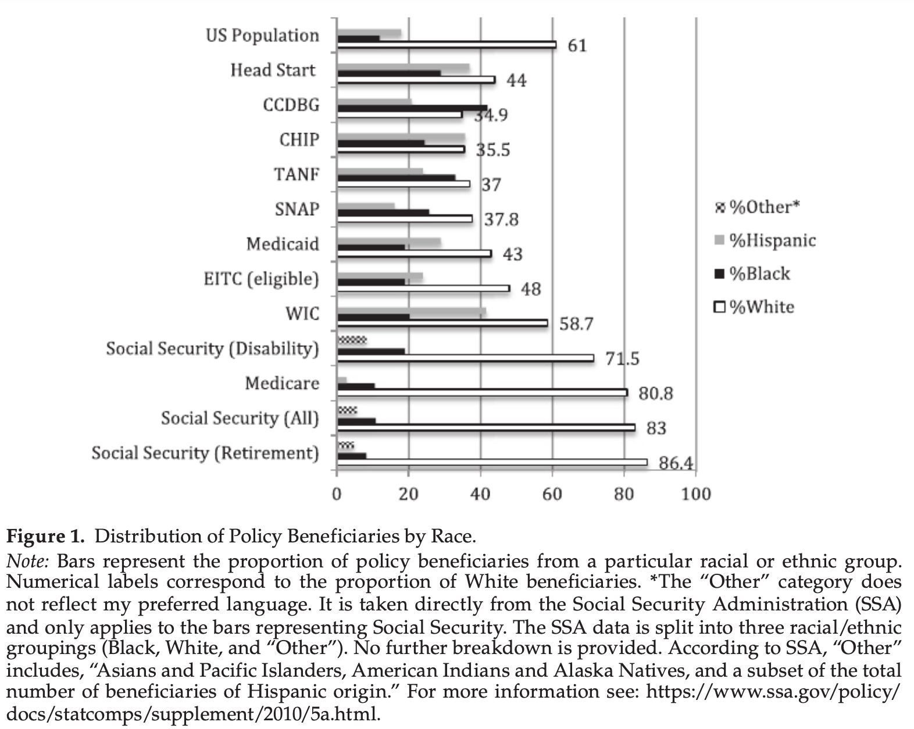

Policy Feedback
Policy feedback
“A new policy creates a new politics”–E.E. Schattschneider
“Policy makes mass politics” - Andrea Campbell
“Policies function as institutions, imposing particular norms and rules on recipients, and thus, in turn, reshaping politics itself. Furthering these ideas, scholars have noted that policies convey to citizens their rights and privileges as well as their duties and obligations as members of the community.” - Mettler, page 252, citing Schanttschneider (1935), Lowi (1965), Landy (1993), and Mead (1986)
Policy feedback
Policy feedback is the idea that policies affect the likelihood that other policies will be enacted. Most researchers studying policy feedback focus on how policies shape politics in ways that enable or constrain future policymaking.
For example, by creating a benefit for a defined group of people, policies like Social Security create incentives for new interest groups like the AARP to form and lobby to protect that benefit (“lock-in” effects) or even expand it (“positive feedback” effects) (See Campbell, 2000)
Policy can empower
Positive feedback dynamics often occur when an interest group lobbies for a policy that then empowers them to lobby to further expand those benefits in the future. For example, when private prison companies successfully lobby governments to privatize prisons, those contracts give them more resources with which to lobby for more privatization.
Policy can disempower
Policies may also disempower a group of people. For example, a policy restricting the rights of unions to bargain with employers on behalf of workers may reduce the ability of the union to collect dues and lobby in the future. This may lead an organized interest group to become a disorganized interest group, possibly to the point where people no longer see themselves as having a common interest (because the policy that granted them rights as a group no longer exists). (See “Policy Feedback as Political Weapon” Hertel-Fernandez, 2018)
Policy can keep people out of power
Similar dynamics often prevent interest groups from forming or gaining power to affect policy in the first place. Prisoners, for example, are a large group of people in the United States whose lives are greatly affected by policies, but policies that prevent or discourage them from voting or participating in civic life inhibit their ability to organize to shape policy processes that affect them (See Weaver and Lerman, 2010).
Feedback dynamics are often complex
Most policies affect group mobilization (or de-mobilization) and future policymaking in ways that are extremely complex and difficult to predict.
Obviously, policy feedback effects are important outcomes to consider in policy design. They are likely more important than immediate substantive outcomes but are much more difficult to anticipate.
Major studies of policy feedback
- Civil War veterans’ and widows’ pensions (Theda Skocpol, Protecting Soldiers and Mothers)
- The GI Bill after World War II (Susan Mettler, Soldiers to Citizens)
- Medicaid rules affect political participation (Jamila Michener, Fragmented Democracy)
Education
The GI Bill
It takes more than a group with a shared interest to affect policy. The group must be
- persuaded to see its common interest
- mobilized to take action
- organized to successfully influence policy
Veterans have a number of groups doing this mobilization, organization, and advocacy.
⚖️Consumer Protection Update! In 2018, we filed an Amicus Brief regarding the importance of Public Service Loan Forgiveness (PSLF) and opposing loan servicers’ active misrepresentations to students about PSLF. There was an important development last week. (1/3)
— Veterans Education Success (@GIBillRights) April 13, 2020
These groups also lobby at committee hearings.
One of the most important effects of a public program is whether it promotes or discourages citizen involvement in the day-to-day activities of American Democracy. - Mettler, page 351
Healthcare
Medicaid
The Affordable Care Act
Policy feedback was anticipated may be frustrated by self-undermining policy feedback effects.
In contrast to Medicare, the ACA is not a social insurance program with a clearly identified constituency that has a clear connection to benefits (Marmor and Oberlander 2011). The ACA treats different groups of Americans in different ways at different times, and that fragmented structure makes it harder to build support for the law, harder to recognize benefits that do exist, and easier to attack since the law’s constituency is diffuse and many intended beneficiaries, including many of the uninsured, do not understand the benefits available to them. - “Unraveling from Within? The Affordable Care Act and Self-Undermining Policy Feedbacks”
The law has been slow to gain popularity, even among those who are benefiting from the expanded healthcare:
A major factor may be partisan effects:
Visibility
Visible policies
In her research, Mettler found that one of the major predictors of people’s attitudes toward policy (and government in general) was the visibility of the policies they benefit from. (See her recent book, The Government-Citizen Disconnect)
Visibility causes a disconnect between perception and reality
People perceive that taxes have gone up, but what people think the money is being spent on is more a feature of policy visibility than of what the money is actually spent on.
Almost all of the increase in spending has gone to Social Security and Medicare, which both remain very popular, even as “government” has become less popular.
This disconnect leads people to oppose taxes, even as they support the programs that those taxes would fund.
Program design affects whether programs change with conditions
All policies have unequal impacts
In the United States, the largest social programs are used by White citizens at a greater rate than their percentage of the population, while smaller programs are used by non-White groups at a greater rate than their percentage of the population.
All policies have unequal impacts
Some groups may benefit more from a program than they pay in taxes
Others may pay more to support a program than they receive
Old-Age Social Insurance (OASI) is known as Social Security.
(Note that it is possible for all groups to receive less than they contributed to a program if there are inefficiencies and waste. Likewise, all groups can often receive more than they put in if their gains to collective action.)
Program design
Program design affects whether programs empower or disempower
In part, because of the scrutiny that “welfare” programs face (because they are one of the first things many people think of when they think of what the government does and because they are associated with non-white people), they often treat beneficiaries with suspicion.
social-welfare program designs can influence levels of civic and political engagement among the poor.
Hiden (submerged) benefits
In contrast, benefits designed to incentivize homeownership (federal mortgage loan guarantees, mortgage tax credits), investment (capital gains tax rates and deductions), and healthcare spending (healthcare tax deduction) are hidden.
Many are hidden in the tax code. Instead of going to a government office to apply for a mortgage subsidy, people check a box when they file taxes to receive this benefit.
This leads people to not perceive these incentives as the government’s doing. Homeowners do not consider how that mortgage would be much more expensive without federal support for their loan or the ability to deduct mortgage interest payments on their tax liability.
Imprisonment
How Mass Imprisonment Burdens the United States with a Distrustful Civic Underclass
by Vesla M. Weaver
Citizens with prison experience are much less likely to be registered to vote or to report having voted in the past presidential election.
Also, see Political Consequences of the Carceral State by Vesla Weaver and Amy Lerman.
Encounters with Authoritarian Institutions Heighten Citizen Distrust
People imprisoned for more than a year trust the government nearly 40 percent less than those without any contact with the criminal justice system.
What scholars call “racial pessimism” is also heightened by criminal justice encounters. Compared to other socioeconomically similar blacks, African Americans who have had experiences with police or prisons perceive more racism, feel less equal, and are more likely to point to “the system” as responsible for black disadvantages.
Policies reshape coalitions
Policy feedback can take many forms. In “Policy Feedback as Political Weapon” Alex Hertel-Fernandez posits several types of feedback:
Types of coalitions created by policy
“Bootleggers and Baptists” coalitions
Policies can create coalitions with “odd bedfellows.”
For example, once enacted, the prohibition of alcohol sales was supported by a coalition of bootleggers who had built profitable illicit businesses selling illegal alcohol and religious groups who were morally opposed to alcohol.
“The California Effect”
Businesses are most profitable when policies give them a competitive advantage, so they will lobby for policies that advantage them and against their retrenchment.
Conversely, businesses will lobby against policies that put them at a competitive disadvantage.
One result is that businesses that have already adapted their operations to stricter regulations in one jurisdiction will lobby other jurisdictions to subject their competitors to the same regulatory standards. Because California often has higher environmental standards than other states, businesses operating in California often lobby for higher national standards to match those in California. This dynamic has been called “The California Effect.”

“The Delaware Effect”

Why are so many credit card companies incorporated in Delaware or Idaho?